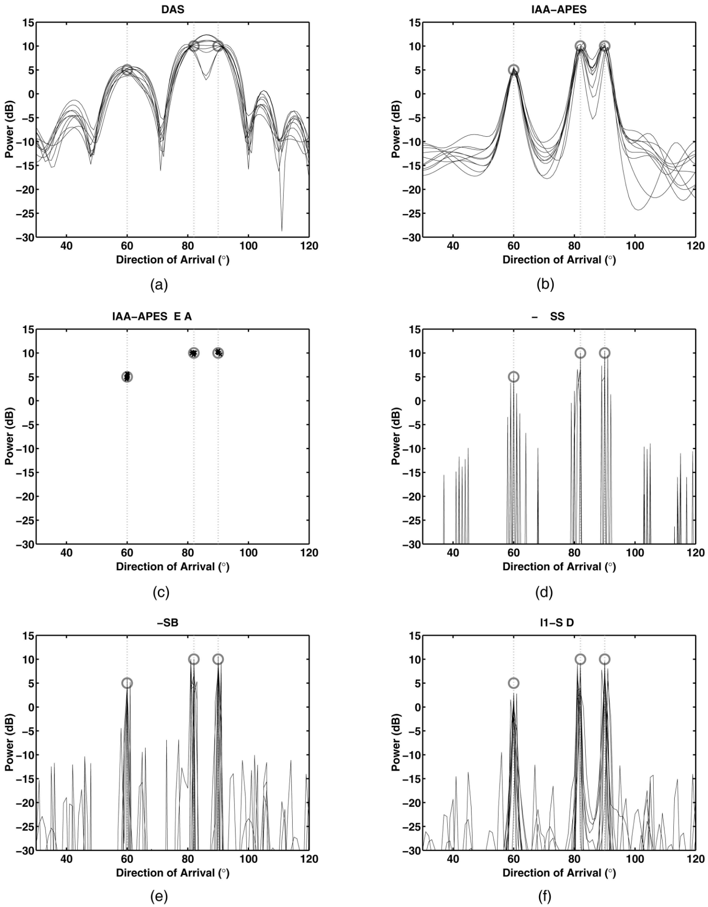
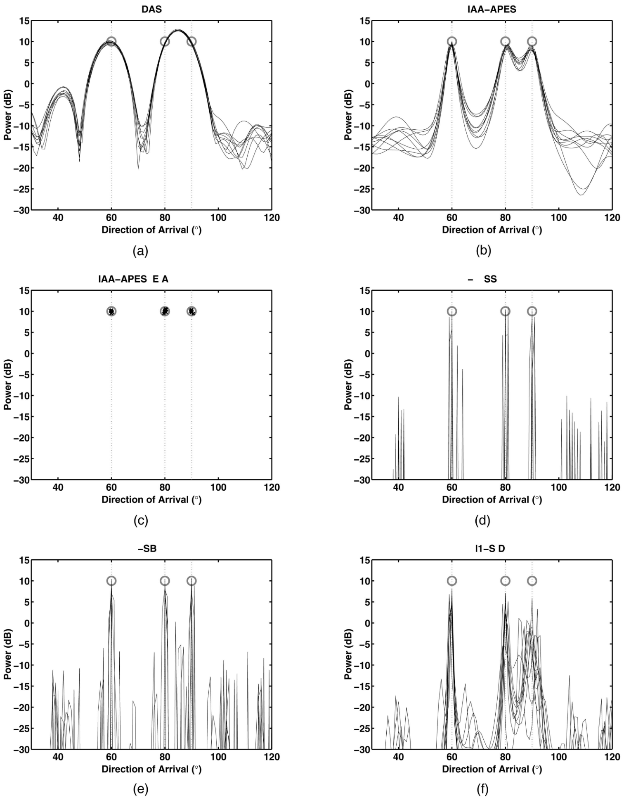
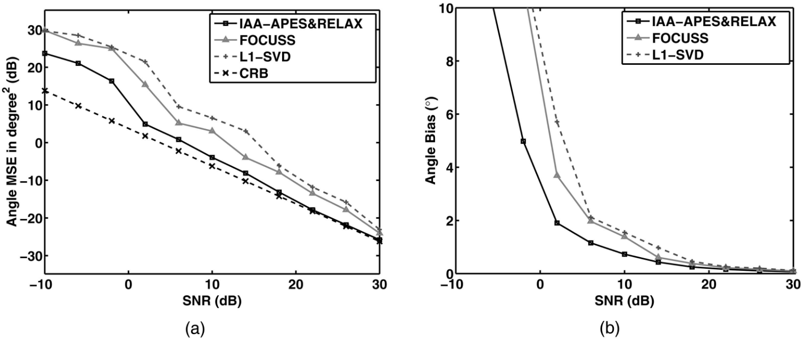
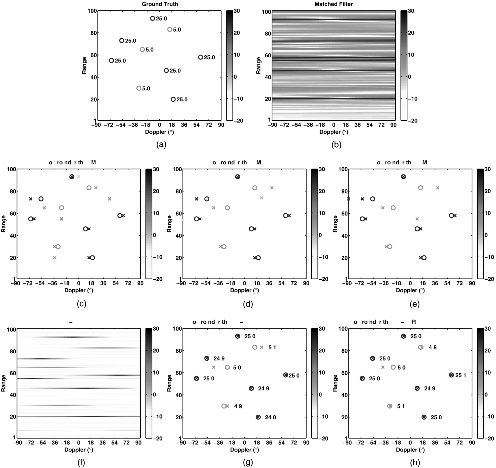
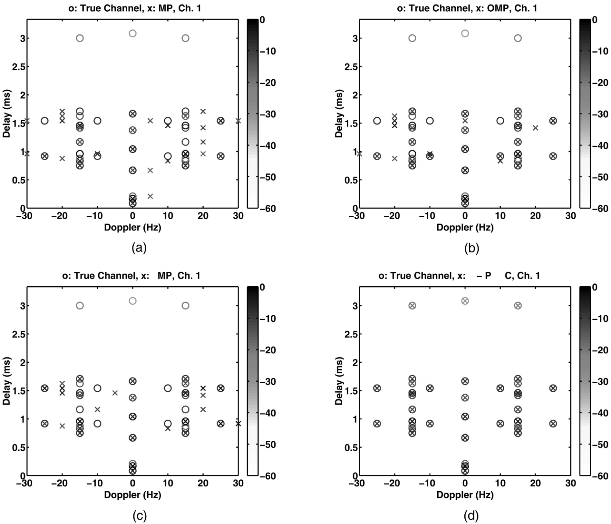

Three uncorrelated sources at 60° (5 dB power), 82° (10 dB power), and 90° (10 dB power), as represented by circles and vertical dotted lines in each plot. N = 3, the noise power is 0 dB (which results in minimum SNR of 5 dB), and 10 Monte-Carlo trials are shown. (a) DAS spatial estimate. (b) IAA-APES spatial estimate. (c) IAA-APES&RELAX point source estimates. (d) M-FOCUSS spatial estimate. (e) M-SBL spatial estimate. (f) ℓ1-SVD spatial estimate.
Three coherent sources at 60°, 80°, and 90°, each with 10 dB power, as represented by circles and vertical dotted lines in each plot. N = 3, noise power is 0 dB (SNR = 10 dB), and 10 Monte-Carlo trials are shown. (a) DAS spatial estimate. (b) IAA-APES spatial estimate. (c) IAA-APES&RELAX point source estimates. (d) M-FOCUSS spatial estimate. (e) M-SBL spatial estimate. (f) ℓ1-SVD spatial estimate.
FOCUSS、ℓ1-SVD：分辨率 0.01°，950 个格点，即 K = 950，均具有两个超参数需要根据不同场景调节
SBL：复杂度过大，不展示
结果：各算法在不同 SNR 下的 (a) 角度估计的总均方误差和 CRB；(b) 角度估计总偏差
IAA-APES&RELAX：低 SNR 下表现更好
Two uncorrelated sources at 77.51° and 90.51° with N = 1. (a) Total angle estimation MSE in dB together with CRB. (b) Total angle estimation bias versus SNR. Each point is average of 100 Monte-Carlo trials. Recall that FOCUSS is single snapshot version of M-FOCUSS.
SISO range-Doppler imaging with three 5 dB and six 25 dB targets, indicated by circles. Noise power is 0 dB, resulting in minimum SNR of 5 dB. (a) Ground truth with power levels. (b) Matched filter. (c) MP and ground truth. (d) OMP and ground truth. (e) LSMP and ground truth. (f) IAA-APES. (g) IAA-APES&BIC and ground truth. (h) IAA-APES&RELAX and ground truth. All power levels are in dB.
MISO Communication Channel Estimation
MISO channel estimation with six transmitters and one receiver. Channel taps are indicated by circles. Channel tap power levels are in range of -30 dB to 0 dB, and noise level is -20 dB, which results in -10 dB minimum SNR. Estimates for first channel via (a) MP, (b) OMP, (c) LSMP, and (d) IAA-APES&BIC. All power levels are in dB.
Conclusion
IAA-APES is believed to be a viable candidate for practical applications since it does not require any hyperparameters, has a simple formulation, provides superresolution, facilitates parallel processing, and shows good performance.
Reference
T. Yardibi, J. Li, P. Stoica, M. Xue, and A. B. Baggeroer, “Source Localization and Sensing: A Nonparametric Iterative Adaptive Approach Based on Weighted Least Squares,” IEEE Transactions on Aerospace and Electronic Systems, vol. 46, no. 1, pp. 425–443, Jan. 2010, doi: 10.1109/TAES.2010.5417172.